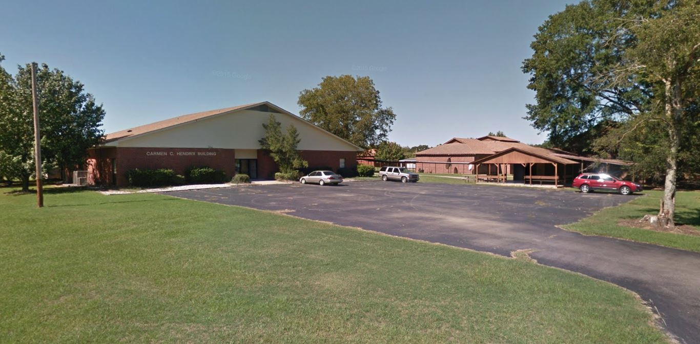

A Resume, but Digital?
Why yes! I thought this might actually be a more apt way to portray my skills to you - possible future employer.
My name is Cruise Brantley and I have various qualities that I believe would be an asset to your company, including building this resume! I hope you'll take my application into serious consideration.

Lambda School
Lambda School has taught me everything I know about Web Development!

Henderson State University
Where I completed various Computer Science courses.

Delight High School
Where I graduated high school, my home town.
| Dates | Company | Essential Responsibilites |
|---|---|---|
| 08/2017- Now | Advanced Repair Agent at GeekSquad |
|
| 01/2017 - 08/2017 | Consultation Agent at GeekSquad |
|
| 05/2017 - 07/2017 | IT Assistant for Triumph Airborne Structures |
|